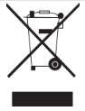

Продуктът отговаря на изискванията на директивата на ЕС за ихвърляне на от- падъчни продукти (2012/19/EU). Този продукт носи класификационен символ за отпадъчно електрическо и електронно оборудване (WEEE).
|  | Този символ показва, че продуктът не бива да се изхвърля с друга не- сортирана битова смет в края на полезния си живот. Използваният уред трябва да се върне в оторизиран пункт за рециклиране на електрически и електронни уреди. За да откриете тези пунктове за събиране, моля обърнете се към местния орган на реда или търговецът, от който е заку- пен продуктът. Всяко домакинство изпълнява важна роля в събирането и реци- клирането на използвани уреди. Правилното изхвърляне на използвани уреди спомага за предотвратяването на потенциални негативни последици върху околната среда и човешкото здраве. |
Закупеният от вас продукт отговаря на изискванията на директивата за ограни- чаване на употребата на определени опасни вещества на ЕС (2011/65/EU). Той не съдържа никой от вредните и забранени материали, описани в Директивата.
Информация за опаковката| Опаковката на продукта е изготвена от подлежащи на рециклиране ма- териали в съответствие с национално- то ни законодателство. Не из- хвър- ляйте опаковъчните материали с би- тови или други отпадъци. Отнесете ги в център за събиране на опако- въчни материали, посочен от мест- ните власти. |
2 / BG